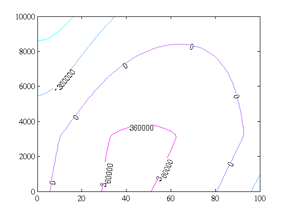
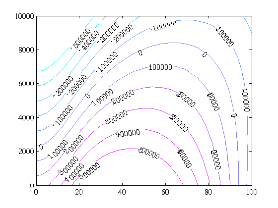
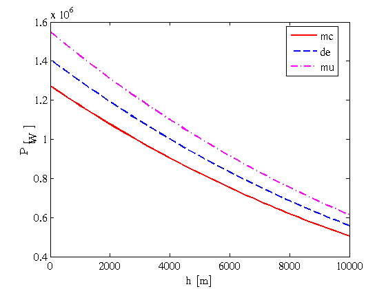
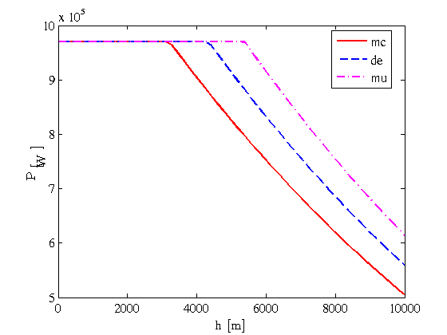
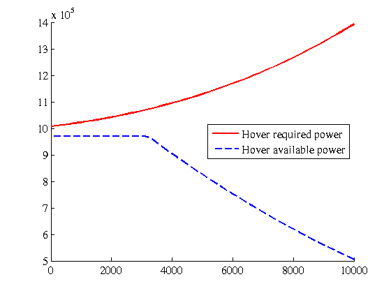
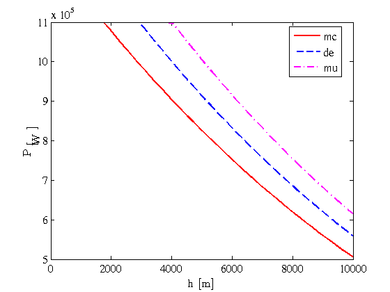
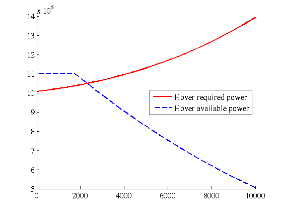
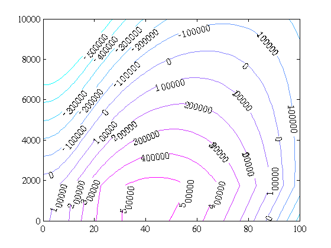

Contents
How to Debug Flight Envelope
This demo show how to use getExcessPower to help debugging getFlightEnvelope
clear all close all setPlot
Description of the problem
Sometimes getFlightEnvelope breaks because it is not able to get maximum forward speed or get helicopter ceiling. Most of the times this is due to a bad combination of engine selection and required power. To understand what it is going on under the hook this demo shows how to use the function getExcessPower to view available and required power as function of altitude and forward speed.
Setup the example data
First, an ISA is loaded a desreq and define an energy helicopter. Note that this design requirement produces an helicopter which is not able to hover because there is no enough power like getExcessPower shows.
atm = getISA; Z = NaN; gammaT = 0; nh = 53; h = linspace(0,10000,nh); nv = 51; v = linspace(0,100,nv); [V,H] = ndgrid(v,h); numEngines = 2; engine = Arriel2C2(atm,numEngines); dr = kg4500DR; heli = desreq2stathe(dr,engine); he = stathe2ehe(atm,heli); GW = 45000*ones(nv,nh); FM = 975*ones(nv,nh); OmegaN = he.mainRotor.Omega*ones(nv,nh); fc = getFlightCondition(he,'V',V,'H',H); P = getExcessPower(he,fc,atm); figure(1) [D,g] = contour(V,H,P); hold on; set(g,'ShowText','on'); set(g,'LevelList',linspace(-1800000,1800000,11)); colormap cool % % % % % % % % % % P = getExcessPower(he,v,gammaT,h,Z,atm); % % % % % % % % % % [V,H] = meshgrid(v,h); % % % % % % % % % % figure(1) % % % % % % % % % % [D,g] = contour(V,H,P); % % % % % % % % % % set(g,'ShowText','on'); % % % % % % % % % % set(g,'LevelList',linspace(-5e5,5e5,11)); % % % % % % % % % % colormap cool
As it can be seen, there is a negative excess of power for hovering and maximum transmission power is constraining maximum continuous power map. Note that the excess power contour level of 0 is an approximation to the flight envelope of the helicopter. Now we skip the transmission power constraint to check if there is enough power at hover flight condition by setting the option constrainedEnginePower='no'
P = getExcessPower(he,fc,atm,'constrainedEnginePower','no'); figure(2) [D,g] = contour(V,H,P); set(g,'ShowText','on'); set(g,'LevelList',linspace(-5e5,5e5,11)); colormap cool
In order to understand what it is going on, we plot both the available power using plotHelicopterEnginePerformance and the required energy to hover at several altitudes using getP.
plotHelicopterEnginePerformance(he,h); v_hover = zeros(1,nh); fc_hover = getFlightCondition(he,'V',v_hover,'H',h); Phover = getP(he,fc_hover,atm); Peng = he.availablePower.fPa_mc(h); figure(5); hold on; plot(h,Phover,'r-'); plot(h,Peng,'b--'); legend({'Hover required power','Hover available power'},'Location','Best')  
As it can be seen, the two turboshafts provide a maximum continuous power at sea level about 1.3 MW, and the maximum transmission power which is about 0.97MW is constraining maximum continuous engine power map up to altitudes about 3100 meters. In figure 5 it can be seen that required power for hovering is higher than available power, and for this reason there is no positive excess power at hover. The hover required power at sea level is about 1 MW
In order to overcome the problem is enough to provide a higher value of maximum transmission power which is able to provide an available power for hovering higher thant the required power for hovering. Looking at figure 4 we can check that fixing maximum power transmission at about 1.1 MW we can have enough available power to hover. The way to set this is the next one
Pmt = 1.1e6; fPmt = @(h) Pmt*ones(size(h)); he.transmission.fPmt = fPmt; he.transmission.Pmt = Pmt; availablePower = engine_transmission2availablePower(he.engine,he.transmission); he.availablePower = availablePower;
Now, we check that we have enough available power running the previous code but with the new maximum transmission power, that is:
plotHelicopterEnginePerformance(he,h); Phover = getP(he,fc_hover,atm); Peng = he.availablePower.fPa_mc(h); figure(8); hold on; plot(h,Phover,'r-',h,Peng,'b--'); legend({'Hover required power','Hover available power'},'Location','Best') 
Finally, we get the new excess power map.
P = getExcessPower(he,fc,atm,'constrainedEnginePower','yes'); figure(9) [D,g] = contour(V,H,P); set(g,'ShowText','on'); set(g,'LevelList',linspace(-5e5,5e5,11)); colormap cool